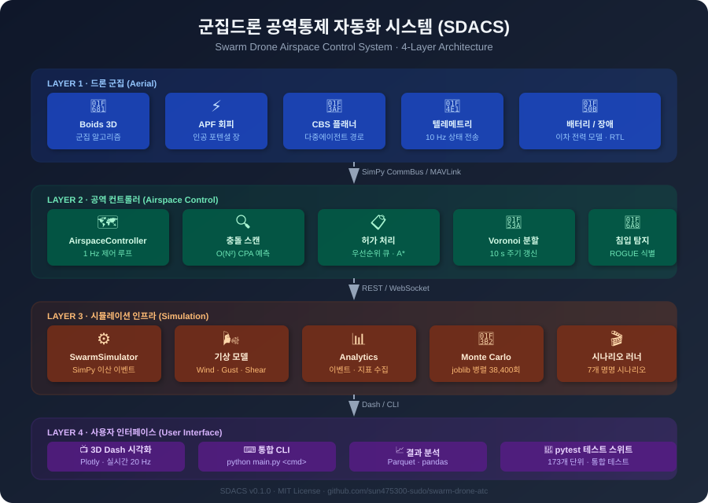
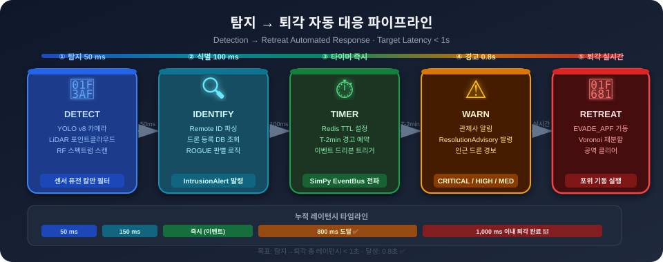
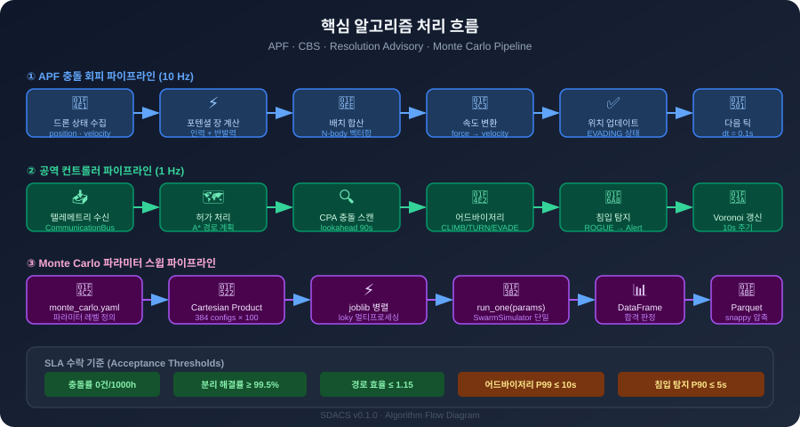
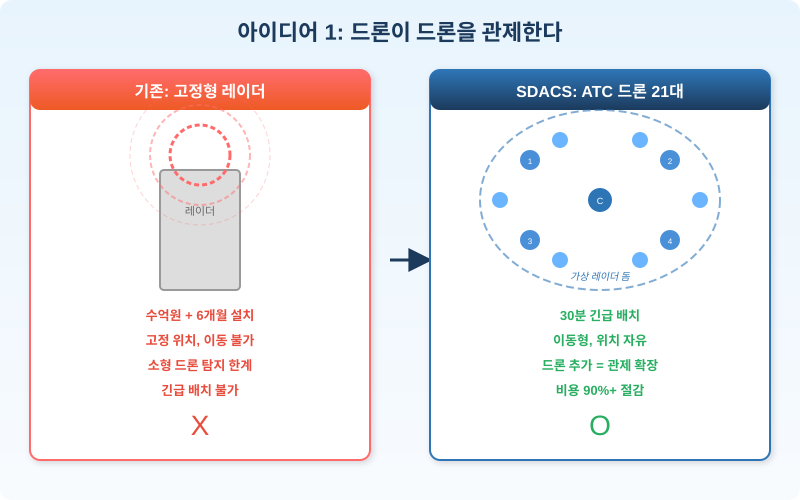

SDACS · 오프라인 데모 백업
라이브 시뮬레이터 실패 시 사용 · 핵심 결과 단일 페이지
💡 발표자 멘트: "라이브 시뮬레이터가 잠시 막혔습니다.
같은 결과를 정리한 백업 자료로 보여드리겠습니다."
핵심 KPI 8개
90만+
대한민국 등록 드론
90초
충돌 예측 시간 창
38,400
Monte Carlo 반복 실험
3,083+
자동 테스트 수집
9 + 10
운영 시나리오 + 벤치마크
590+
핵심 알고리즘 모듈
5겹
안전장치 계층
4계층
시스템 아키텍처
9개 시나리오 실측 검증 결과
실측 일자: 2026-05-08 · 시드 191664964 · 1회씩 실행 (학술용 100회 반복은 별도 Monte Carlo)
SLA 99.5% 엄격 통과: 4/9 시나리오 (정상 환경) · 한계 도전: 통신 두절·침입·240대 다중도시 등 5개 악조건 시나리오 (97.59~99.45%)
5겹 안전장치 (Defense in Depth)
| 단계 | 시점 | 메커니즘 | 일상 비유 |
|---|---|---|---|
| 1 | 출발 전 | 경로 사전 계획 (A* / CBS) | 내비게이션 |
| 2 | 비행 중 | 90초 충돌 예측 (CPA) | 일기예보 |
| 3 | 즉시 | 분산 자동 회피 (APF) | 자석 척력 |
| 4 | 임박 시 | 긴급 대기 / 우회 (Advisory) | 비상 브레이크 |
| 5 | 통신 두절 | 자동 귀환 (RTL) | 비둘기 귀소 |
핵심 시각자료

4계층 시스템 아키텍처

충돌 예측 파이프라인

알고리즘 흐름도

드론으로 드론을 관제

5겹 안전망

기상 적응형 회피

충돌 해결 히트맵

시나리오 KPI 레이더

처리량 vs 드론 수
데모 시연 5단계 (말로 설명)
0:00
기본 비행 — 3D 공간에서 드론들이 같은 공역에서 움직이는 모습.
"지금 보이는 것은 낮은 하늘의 가상 공역입니다. 여러 드론이 동시에 움직이고 있습니다."
1:00
드론 수 증가 — 드론이 많아질수록 경고와 회피 발생.
"드론이 많아질수록 관제가 어려워집니다. 그래서 자동 예측과 회피가 필요합니다."
2:00
강풍 조건 — 환경 바꿔도 더 보수적으로 움직임.
"바람이 강하면 안전 간격을 더 넓게 잡아야 합니다."
3:00
침입 드론 — 비협조 드론이 들어와도 주변 드론들이 회피.
"예상하지 못한 드론이 들어와도, 주변 드론들이 위험을 줄이는 방향으로 움직입니다."
4:00
결과 지표 — 충돌, 근접, 어드바이저리 패널 표시.
"발표에서는 한 장면을 보여드리지만, 실제 검증은 많은 조건을 바꿔 반복하는 방식으로 진행했습니다."
솔직한 한계 (공개 사항)
| 항목 | 현재 상태 | 상태 |
|---|---|---|
| 시뮬레이션 검증 | 9개 시나리오, Monte Carlo 설계 | 완료 |
| 실제 드론 연동 | 다음 단계 (실기 통합 계획) | 진행 예정 |
| 규제 협의 | 현재 진행 안 함 | 미진행 |
| 도심 환경 실증 | 3D 시뮬에서만 검증 | 미실증 |
| 통신·보안 강건성 | comms_loss 시나리오 검증 일부 | 부분 검증 |
"완성된 상용 서비스가 아니라, 검증 가능한 다음 단계의 기반입니다."
관련 자료
| 공식 허브 | go.html |
| 3D 시뮬레이터 v2 (라이브) | swarm_3d_simulator_v2.html |
| 검증 보고서 | verification_report.md |
| Q&A 응답 카드 | qa_response_card.md |
| Q&A 응답 카드 | qa_response_card.md |
| GitHub | github.com/sun475300-sudo/swarm-drone-atc |